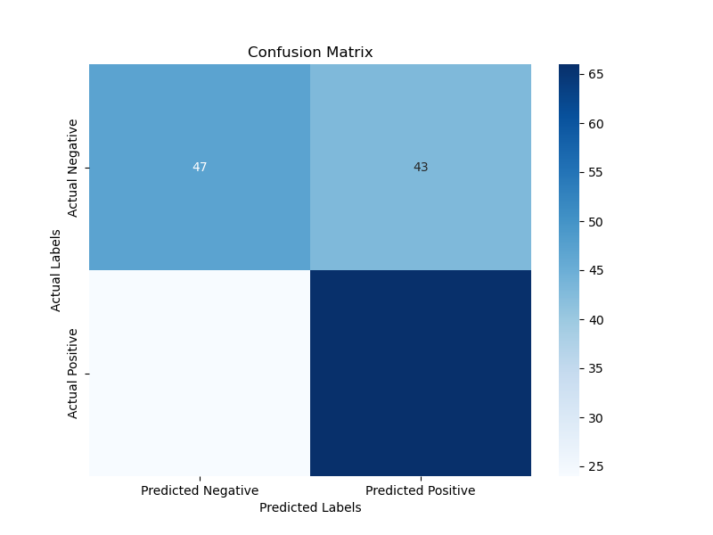
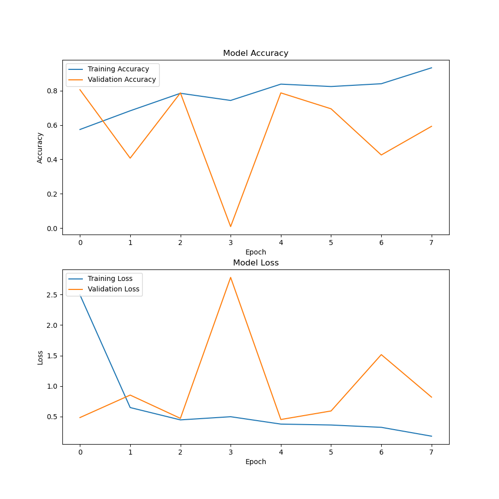
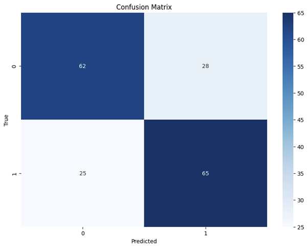
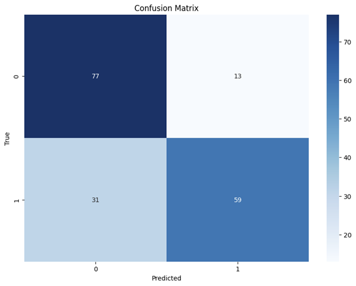
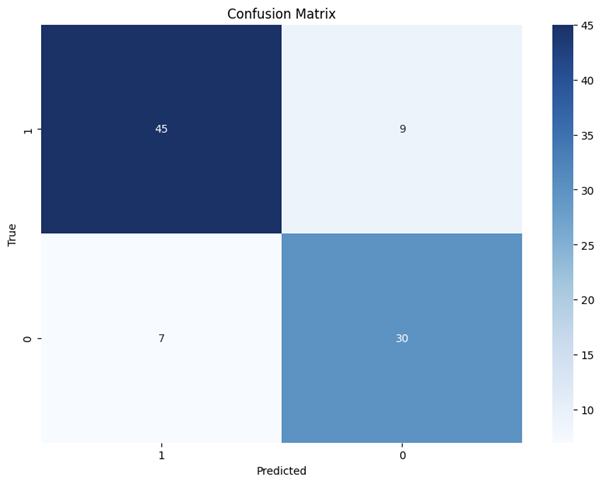

Proposal: Machine Learning for Signature Verification
Introduction / Background
Signature forgery is a widespread issue impacting banking, legal, and business sectors.
Forged signatures can lead to unauthorized access, fraudulent transactions, and significant
financial losses. Businesses, in particular, can suffer from fraudulent contracts and
unauthorized transactions, impacting their credibility and operational efficiency. Individuals
can also experience significant financial loss when forgers steal money from their accounts
or engage in fraudulent transactions using their forged signatures. Manual detection is
labor-intensive and prone to errors, necessitating an automated and reliable method for
verification.
Literature Review
Several studies have explored signature verification using machine learning. For example,
Poddar et al. (2020) proposed a method for signature recognition and forgery detection
using Convolutional Neural Networks (CNN), the Crest-Trough method, and the SURF
algorithm. They achieved an accuracy of 85-89% for forgery detection and 90-94% for
signature recognition. Another study by Justino et al. (2004) evaluated different learning
strategies and classification methods for offline signature verification. They found that
support vector machines (SVM) outperformed other methods in scenarios involving
forgeries. A systematic review by Abdelrahman et al (2021) highlighted the effectiveness of
deep learning-based models for offline signature verification, consolidating performances
across various public datasets.
Dataset Description
The dataset consists of images of signatures from 30 individuals, each with 5 genuine and 5
forged signatures. The images are named in a way that differentiates between genuine and
forged signatures.
It can be found here.
Problem Definition
Problem
The primary problem is to develop a machine learning model that can accurately distinguish
between genuine and forged signatures.
Motivation
Signature verification is important for preventing fraud and ensuring the authenticity of
documents. An automated system can significantly reduce the time and effort required for
manual verification while also increasing accuracy and reliability.
Methods
Data Processing
- Image Resizing: Standardize the size of all signature images to ensure uniformity.
- Normalization: Normalize pizel values to improve model performance.
- Data Augmentation: Apply transformations such as rotation, scaling, and translation
to increase the diversity of training data.
Machine Learning Algorithms
- Convolutional Neural Networks (CNN): Effective for image based tasks due to their
ability to capture spatial hierarchies in images.
- Support Vector Machines (SVM): Suitable for classification tasks especially with
high dimensional data.
- Random Forest: Ensemble method that can handle various data types and provide
robust classification performance.
(Potential) Results and Discussion
Quantitative Metrics
- Accuracy: Overall correctness of the model.
- Precision: Correctness of positive predictions.
- Recall: Ability to identify all positive instances.
Project Goals
- Achieve an accuracy of at least 90% on the test set.
- Minimize false positive and false negative rates.
Machine Learning for Signature Verification
Introduction / Background
Signature forgery is a widespread issue impacting banking, legal, and business sectors.
Forged signatures can lead to unauthorized access, fraudulent transactions, and significant
financial losses. Businesses, in particular, can suffer from fraudulent contracts and
unauthorized transactions, impacting their credibility and operational efficiency. Individuals
can also experience significant financial loss when forgers steal money from their accounts
or engage in fraudulent transactions using their forged signatures. Manual detection is
labor-intensive and prone to errors, necessitating an automated and reliable method for
verification.
Literature Review
Several studies have explored signature verification using machine learning. For example,
Poddar et al. (2020) proposed a method for signature recognition and forgery detection
using Convolutional Neural Networks (CNN), the Crest-Trough method, and the SURF
algorithm. They achieved an accuracy of 85-89% for forgery detection and 90-94% for
signature recognition. Another study by Justino et al. (2004) evaluated different learning
strategies and classification methods for offline signature verification. They found that
support vector machines (SVM) outperformed other methods in scenarios involving
forgeries. A systematic review by Abdelrahman et al (2021) highlighted the effectiveness of
deep learning-based models for offline signature verification, consolidating performances
across various public datasets.
Dataset Description
The dataset consists of images of signatures from 30 individuals, each with 5 genuine and 5
forged signatures. The images are named in a way that differentiates between genuine and
forged signatures.
It can be found here.
Problem Definition
Problem
The primary problem is to develop a machine learning model that can accurately distinguish
between genuine and forged signatures.
Motivation
Signature verification is important for preventing fraud and ensuring the authenticity of
documents. An automated system can significantly reduce the time and effort required for
manual verification while also increasing accuracy and reliability.
Methods (midterm update)
Data preprocessing
- The image is read by OpenCV.
- The image is converted from BGR to RGB format.
- The image is resized to 224x224 pixels.
- If the image is a genuine signature, it is labeled with a 1.
- If the image is a forgery, it is labeled with a 0.
- The data is then converted into numpy arrays.
- The same function is used to process both the training and test images.
Model Description (midtem update)
-
Base Model:
- Used VGG16 from tensorflow.keras.applications with pre-trained weights from 'imagenet'.
- Set include_top=False to exclude the top fully connected layers.
- Defined the input shape as (224, 224, 3).
-
Freeze Base Model:
- We Set base_model.trainable = False to prevent the layers of the VGG16 model from being updated during training.
-
Custom Layers:
- Flatten layer: Converts the 2D feature maps from the base model to a 1D vector.
- Dense layer: Adds a fully connected layer with 128 neurons and ReLU activation.
- Dropout layer: Randomly sets 30% of neurons to 0 to prevent overfitting.
- Output layer: Adds a fully connected layer with a single neuron and sigmoid activation for binary classification.
-
Model Definition:
- Defined the model with the input from the base model and the output as the custom layers.
-
Model Compilation:
- Compiled the model using RMSprop optimizer.
- Used binary crossentropy as the loss function.
- Included accuracy as a metric to evaluate the model performance.
Discussion of Results (midterm update)
- Accuracy: 0.6278
- Precision: 0.6055
- Recall: 0.7333
Interpretation of Metrics
-
Accuracy (62.78%):
Accuracy measures the proportion of correctly predicted instances out of the total instances. An accuracy of 62.78% indicates that the model correctly predicted approximately 63 out of every 100 instances. This metric is helpful as an overall measure but can be misleading in cases of class imbalance.
-
Precision (60.55%):
Precision is the ratio of true positive predictions to the total predicted positives (i.e., how many selected items are relevant). A precision of 60.55% means that out of all instances classified as positive, only about 61% were actually positive. This metric is crucial when the cost of false positives is high.
-
Recall (73.33%):
Recall is the ratio of true positive predictions to the total actual positives (i.e., how many relevant items are selected). A recall of 73.33% indicates that the model identified approximately 73% of the actual positive instances. This metric is essential when the cost of false negatives is high.


Machine Learning for Signature Verification
Introduction / Background
Signature forgery is a widespread issue impacting banking, legal, and business sectors.
Forged signatures can lead to unauthorized access, fraudulent transactions, and significant
financial losses. Businesses, in particular, can suffer from fraudulent contracts and
unauthorized transactions, impacting their credibility and operational efficiency. Individuals
can also experience significant financial loss when forgers steal money from their accounts
or engage in fraudulent transactions using their forged signatures. Manual detection is
labor-intensive and prone to errors, necessitating an automated and reliable method for
verification.
Literature Review
Several studies have explored signature verification using machine learning. For example,
Poddar et al. (2020) proposed a method for signature recognition and forgery detection
using Convolutional Neural Networks (CNN), the Crest-Trough method, and the SURF
algorithm. They achieved an accuracy of 85-89% for forgery detection and 90-94% for
signature recognition. Another study by Justino et al. (2004) evaluated different learning
strategies and classification methods for offline signature verification. They found that
support vector machines (SVM) outperformed other methods in scenarios involving
forgeries. A systematic review by Abdelrahman et al (2021) highlighted the effectiveness of
deep learning-based models for offline signature verification, consolidating performances
across various public datasets.
Dataset Description
The dataset consists of images of signatures from 30 individuals, each with 5 genuine and 5
forged signatures. The images are named in a way that differentiates between genuine and
forged signatures.
It can be found here.
Problem Definition
Problem
The primary problem is to develop a machine learning model that can accurately distinguish
between genuine and forged signatures.
Motivation
Signature verification is important for preventing fraud and ensuring the authenticity of
documents. An automated system can significantly reduce the time and effort required for
manual verification while also increasing accuracy and reliability.
Methods
Data preprocessing
- The image is read by OpenCV.
- The image is converted from BGR to RGB format.
- The image is resized to 224x224 pixels.
- If the image is a genuine signature, it is labeled with a 1.
- If the image is a forgery, it is labeled with a 0.
- The data is then converted into numpy arrays.
- The same function is used to process both the training and test images.
Model Description
-
Base Model:
- Used VGG16 from tensorflow.keras.applications with pre-trained weights from 'imagenet'.
- Set include_top=False to exclude the top fully connected layers.
- Defined the input shape as (224, 224, 3).
-
Freeze Base Model:
- We Set base_model.trainable = False to prevent the layers of the VGG16 model from being updated during training.
-
Custom Layers:
- Flatten layer: Converts the 2D feature maps from the base model to a 1D vector.
- Dense layer: Adds a fully connected layer with 128 neurons and ReLU activation.
- Dropout layer: Randomly sets 30% of neurons to 0 to prevent overfitting.
- Output layer: Adds a fully connected layer with a single neuron and sigmoid activation for binary classification.
-
Model Definition:
- Defined the model with the input from the base model and the output as the custom layers.
-
Model Compilation:
- Compiled the model using RMSprop optimizer.
- Used binary crossentropy as the loss function.
- Included accuracy as a metric to evaluate the model performance.
Results
Model 1: SVM-based Signature Verification
Model performance:
- Training Accuracy: 1
- Testing Accuracy: 0.706
- Training Precision: 1
- Testing Precision: 0.706
- Training Recall: 1
- Testing Recall: 0.706
- Training F1 Score: 1
- Testing F1 Score: 0.705
The training accuracy of the SVM model is 100%, indicating that it perfectly classified the training data. However, the testing accuracy dropped to 70.6, suggesting overfitting. Where the model performs exceptionally well on the training data but poorly on unseen testing data. Precision, recall, and F1 score follow similar patterns, highlighting the discrepancy between training and testing performance.
Confusion Matrix:
[[62 28]
[25 65]]
This confusion matrix shows that the model correctly identified 62 genuine signatures and 65 forged signatures. There were 28 false positives (genuine signatures identified as forged) and 25 false negatives (forged signatures identified as genuine).
Visualizations:
| Dataset |
Accuracy |
Precision |
Recall |
F1-Score |
| Testing |
0.755556 |
0.766204 |
0.755556 |
0.753086 |

Analysis of SVM Model
Strengths:
- Perfect Training Performance: The model achieved 100% accuracy on the training set, indicating it learned the training data very well.
- Decent Test Performance: A testing accuracy of 70.6% is still a reasonable starting point for signature verification tasks.
Limitations:
- Overfitting: The model's perfect training accuracy and lower testing accuracy indicate overfitting. It memorized the training data but failed to generalize to new, unseen data.
- Misclassifications: The confusion matrix shows significant misclassifications, suggesting the model struggles to differentiate between very similar genuine and forged signatures.
Trade-offs:
- Model Complexity vs. Generalization: While SVM with a linear kernel is less complex compared to deep learning models, it still overfitted the training data, impacting its ability to generalize.
- Training Time vs. Performance: SVMs are generally faster to train on smaller datasets but may require careful tuning to balance performance on training and testing sets.
Next Steps:
- Regularization: Introduce regularization techniques to prevent overfitting.
- Data Augmentation: Apply data augmentation to increase the variability in the training data, helping the model generalize better.
- Model Tuning: Experiment with different kernels and hyperparameters to find a better-performing SVM model.
- Additional Features: Extract more informative features from the signatures to improve model performance.
Summary:
The SVM model demonstrated good performance on the training set but showed signs of overfitting, leading to a drop in testing accuracy. With testing accuracy of 70.6, it still provides a baseline for signature verification tasks. Future work should focus on addressing overfitting and, perhaps, enhancing the model's ability to generalize unseen data.
Model 2: Random Forest-based Signature Verification
Model performance:
- Training Accuracy: 1
- Testing Accuracy: 0.756
- Training Precision: 1
- Testing Precision: 0.766
- Training Recall: 1
- Testing Recall: 0.756
- Training F1 Score: 1
- Testing F1 Score: 0.753
The training accuracy of the Random forest model is 100%, which means that it perfectly classified the training data. This, however, is problematic since the testing accuracy is 75.6 percent, suggesting overfitting. Precision, recall, and F1 score followed similar patterns which means there was discrepancy between training and testing performance.
Confusion Matrix:
[[77 13]
[31 59]]
This confusion matrix shows that the model correctly identified 77 genuine signatures and 59 forged signatures. There were 13 false positives(genuine signatures that were identified as forged) and 31 false negatives (forged signatures identified as genuine).
Visualizations:
| Dataset |
Accuracy |
Precision |
Recall |
F1-Score |
| Testing |
0.705556 |
0.705784 |
0.705556 |
0.705474 |

Analysis of Random Forest Model
Strengths:
- High Training Performance: The model achieved 100% accuracy on the training set, indicating it learned the training data very well.
- Decent Test Performance: A testing accuracy of 75.6% is a reasonable starting point for signature verification tasks.
Limitations:
- Overfitting: The model's perfect training accuracy and lower testing accuracy indicate overfitting. It memorized the training data but failed to generalize to new, unseen data.
- Misclassifications: The confusion matrix shows significant misclassifications, suggesting the model struggles to differentiate between very similar genuine and forged signatures.
Trade-offs:
- Model Complexity vs. Generalization: While Random Forest models are robust and less likely to overfit than other models, in this case, it still overfitted the training data, impacting its ability to generalize.
- Training Time vs. Performance: Random Forests are generally faster to train on smaller datasets but may require careful tuning to balance performance on training and testing sets.
Next Steps:
- Regularization: Introduce regularization techniques to prevent overfitting.
- Data Augmentation: Apply data augmentation to increase the variability in the training data, helping the model generalize better.
- Model Tuning: Experiment with different hyperparameters to find a better-performing Random Forest model.
- Additional Features: Extract more informative features from the signatures to improve model performance.
Summary:
The Random Forest model demonstrated good performance on the training set but showed signs of overfitting, leading to a drop in testing accuracy. With a testing accuracy of 75.6%, it still provides a baseline for signature verification tasks. Future work should focus on addressing overfitting and enhancing the model's ability to generalize to unseen data.
Model 3: InceptionV3-based Signature Verification
Model performance:
- Accuracy: 0.824
- Precision: 0.817
- Recall: 0.822
- F1 Score: 0.819
The accuracy of the model is 82.4%, indicating that it correctly identifies genuine and forged signatures most of the time. The precision, recall, and F1 score are all around 0.82, suggesting a balanced performance in identifying both genuine and forged signatures.
Confusion Matrix:
[[45 9]
[7 30]]
This confusion matrix shows that the model correctly identified 45 genuine signatures and 30 forged signatures. There were 9 false positives (genuine signatures identified as forged) and 7 false negatives (forged signatures identified as genuine).
Visualizations:
| Dataset |
Accuracy |
Precision |
Recall |
F1-Score |
| Training |
1 |
1 |
1 |
1 |
| Testing |
0.824176 |
0.817398 |
0.822072 |
0.819265 |

Analysis of CNN Model
Strengths:
- High Initial Accuracy: The InceptionV3 model, combined with data augmentation and fine-tuning, achieved a relatively high accuracy.
- Balanced Metrics: Precision, recall, and F1 scores indicate balanced performance, with the model effectively handling both classes.
Limitations:
- Potential Overfitting: The model showed high accuracy on the training data but a slight drop in validation performance, indicating potential overfitting.
- Confusion in Predictions: The confusion matrix shows some degree of misclassification, which suggests the model could be improved further, especially in distinguishing very similar genuine and forged signatures.
Trade-offs:
- Data Augmentation vs. Training Time: Data augmentation helps generalize better but increases training time.
- Model Complexity vs. Interpretability: InceptionV3 is a complex model, making it less interpretable compared to simpler models like logistic regression or SVM.
Next Steps:
- Hyperparameter Tuning: Further fine-tuning of the model's hyperparameters could improve performance.
- Additional Data: Gathering more signature samples, especially more varied forged signatures, could help the model generalize better.
- Model Ensemble: Combining predictions from multiple models might improve overall performance.
- Feature Engineering: Experimenting with different feature extraction techniques could lead to better discrimination between genuine and forged signatures.
Summary:
This model provides a solid baseline for automated signature verification using a deep learning approach. With an accuracy of over 82%, it demonstrates the potential for practical application in real-world scenarios. Future work should focus on addressing the identified limitations and exploring ways to enhance the model's robustness and accuracy.
Disussion
In this project, we evaluated three different models for signature verification: InceptionV3-based CNN, SVM, and Random Forest. Each model demonstrated unique strengths and weaknesses, providing valuable insights into their performance, generalization capabilities, and suitability.
The InceptionV3-based CNN achieved the highest testing accuracy at 82.4%, outperforming the other models. It exhibited balanced precision, recall, and F1 scores, showing that it was effective in handling both genuine and forged signatures. The model’s use of data augmentation during training enhanced its ability to generalize, although it still showed some signs of potential overfitting. The deep learning architecture, though required significant computational resources, captured intricate patterns in the data, leading to its superior performance.
The random forest model also performed well--it had a testing accuracy of 75.6. It demonstrated robustness against overfitting compared to the SVM model, despite it still showing some signs of it. The random forest model provided a good balance between performance and interpretability, making it a good option when computational resources are limited, and adequate interpretability is necessary. However, it had more misclassifications compared to the InceptionV3-based CNN, which can be seen from the confusion matrix.
The SVM model was easier to implement, but it struggled with generalization. It achieved a testing accuracy of 70.6%, which was the lowest of the models we created. It also happened to show significant overfitting. The SVM model had the highest number of misclassifications, particularly in distinguishing between similar genuine and forged signatures. Its precision, recall, and F1 scores were also the highest, showing that it had challenges in accurately classifying signatures.
To conclude, the InceptionV3-based CNN model outperformed both the SVM and Random Forest models in terms of accuracy and balanced performance metrics, making it the recommended choice for scenarios where high accuracy and balanced performance are important. The random forest model, despite being as accurate as CNN, offered a good balance between performance and interpretability, making it suitable for situations requiring faster training times and better interpretability. The SVM model, though the simplest to implement, could use some further work and improvements to enhance its performance and reduce overfitting. Overall, the inceptionV3-based CNN stands out as the best performer, demonstrating the importance of advanced deep learning techniques in signature verification tasks.